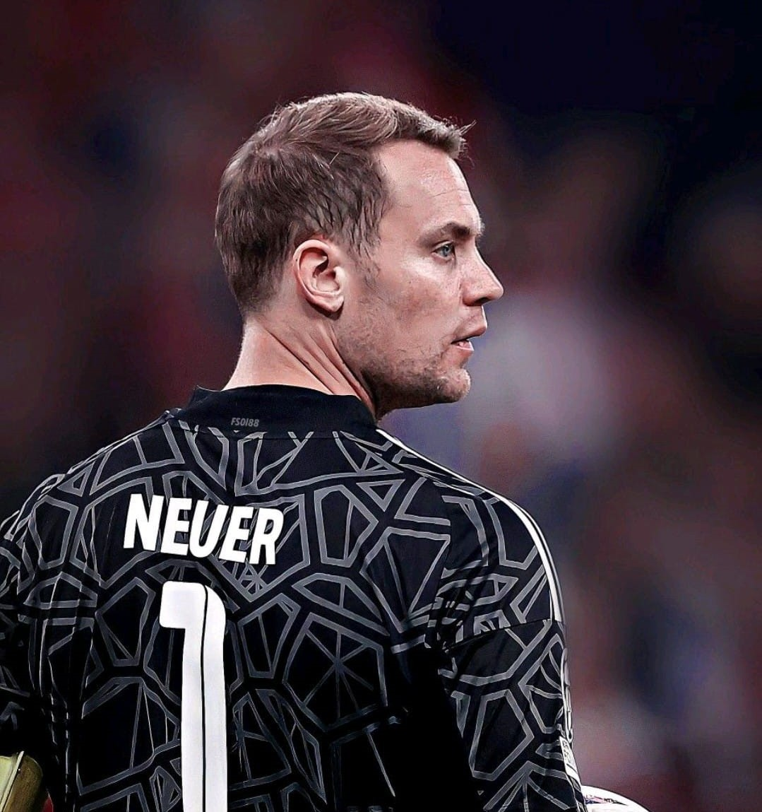
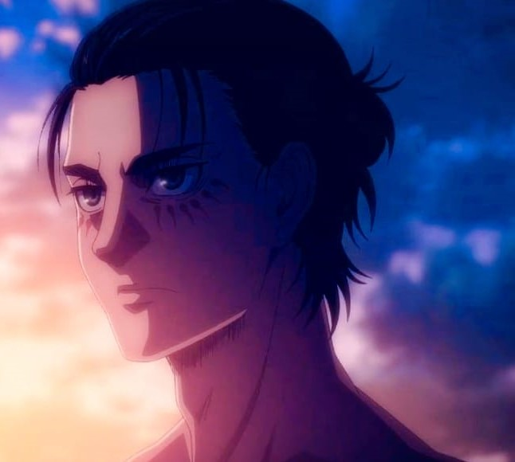
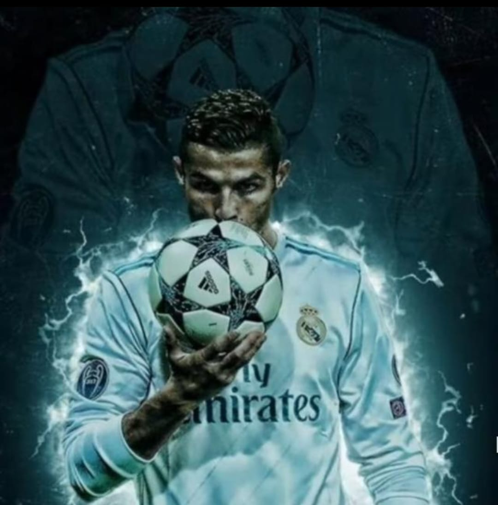

PASIFIC

Merhaba. Ben Kayra Mert Aydın. 30 Mayıs 2010'da doğdum. Gerçek Kuzay takımında profesyonel kalecilik yaptım. Şimdi ise herhangi bir kulüpte oynamıyorum.
Merhaba ben Kadir Efe Yılmaz.20 Aralık 2009 doğumluyum.Hobilerim 10 yaşına kadar satranç oynadım ve satrançta büyük başarılar elde ettikten sonra baskete yoğunlaştım baskete Çukurova Basketbol ile başladım şimdi de Anadolu Efes’in altyapısında oynuyorum

Merhaba ben Efe Toprak Arıçiçek. 17 Ekim 2010 tarihinde Manisa'da doğdum. Hayatımda futbolun önemli bir yeri vardır. Küçük yaşımdan beri futbol oynamayı çok severim. Ek olarak bilsemde bilişim ve edebiyat görüyorum.
